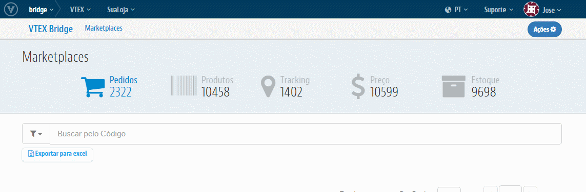
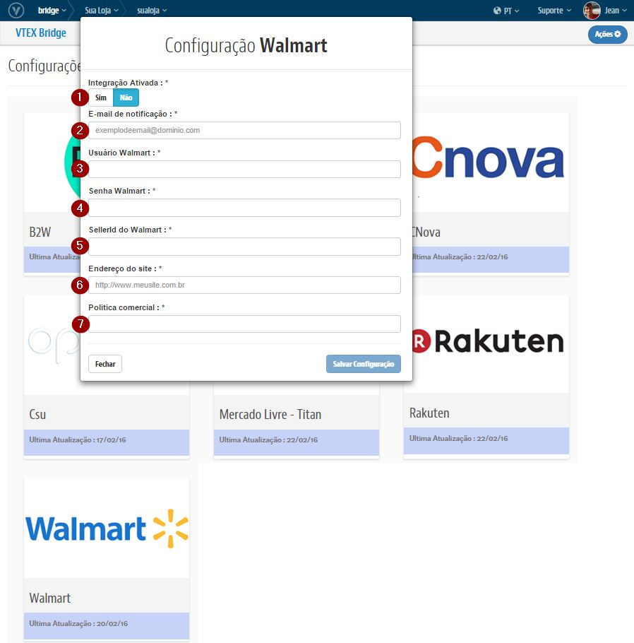
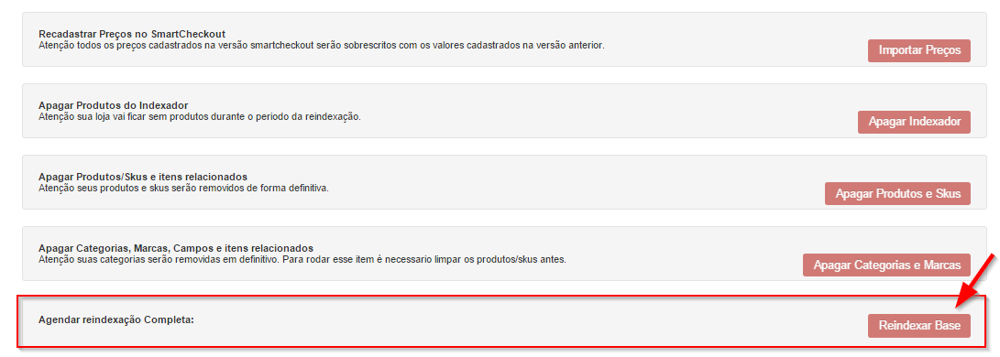

Caso deseje usar a mesma politica (Ou seja, as mesmas regras para sortimento, promoções e condições de entrega da loja) use a politica comercial "1". Caso contrario leia este link Seleção de política comercial.
Caso sua politica comercial seja diferente de 1: Configure a logística para essa política comercial.
Entrar em contato com o Walmart e obtenha o usuario, senha e id do seller para acesso a API:
https://marketplace.walmart.com.br/prospection
Importante: As configurações realizadas no Bridge para Walmart realiza a criação automatica do Afiliado no OMS e libera o Perfil de Acesso no E-Commerce.


Para cada campo temos:
Despois de configurado, os itens que forem indexados serão enviados automaticamente para o Walmart!
Após as configuração acima forem concluídas, será necessário reindexar a base para que todos os itens sejam integrados corretamente.
Para isso, siga os passos abaixo:

Obs.: É possível acompanhar quantos produtos estão na fila acessando o módulo de E-Commerce. Lá existe vários dashboards que mostram: o total indexado, itens ainda não enfileirado, total na fila, na fila recentemente, entre outros.
Os itens passarão por um processo de catalogação até serem de fato disponibilizados no Marketplace. Esse prazo é variável de acordo com a demanda que o MarketPlace tiver. À medida que forem exportados, serão informados os preços e itens disponíveis em estoque de cada produto. Toda vez que houver uma alteração no preço de um produto, as informações serão atualizadas junto ao Marketplace. As atualizações relacionadas aos itens em estoque funcionam online toda vez que tiverem 5 unidades ou menos em estoque. Movimentações de estoques diferente dessa regra, não é indexada.
Autor: Ana Izabel Jacobsen
Propriedade: VTEX ©